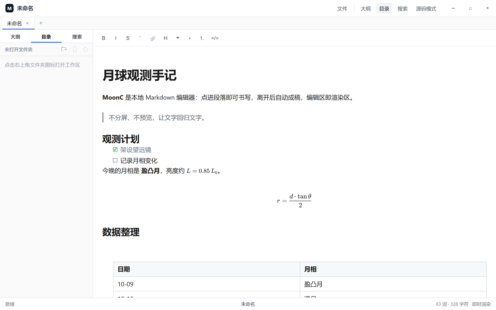
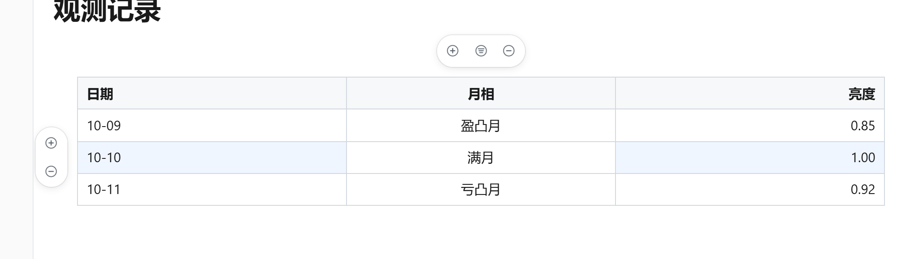
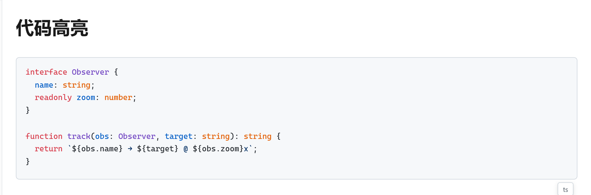

Features
为专注写作而生
从段落编辑到导出成稿，把注意力留在文字本身。
-
即时成稿
当前段落可编辑，其余段落即时呈现效果；也可切换为全文编辑。
-
常用写法齐全
标题、列表、任务、表格、代码、公式与流程图均可直接书写。
-
图片随手贴
粘贴即可保存并插入，预览与原文同屏可见。
-
工作区与导出
多标签、大纲、文件树；需要分享时可导出网页或 PDF。
编辑区即渲染区
点进任意段落即刻编辑，光标所在处写 Markdown，其余段落始终以成品排版呈现。 写完点别处，这一段自动成稿。
数学公式
行内、块级 LaTeX 公式均可直接书写，由 KaTeX 即时排版，适合课堂笔记与论文草稿。
表格编辑
点进单元格直接改内容，行高亮、列对齐随手调，加行减列只需一键。

代码高亮
围栏代码块自动识别语言并高亮，右下角随时提示当前语言。

流程图
用 Mermaid 语法描述流程，保存即渲染为矢量图，文档里的思路一目了然。
任务清单
任务列表直接勾选完成状态，配合嵌套列表整理待办，进度尽收眼底。
Download
下载 MoonC
安装后即可开始本地写作，数据保存在你自己的电脑上。
MoonC 0.3.0
Windows 安装包 · x64
适用于 Windows 10 / 11。更多版本见 历史发布。